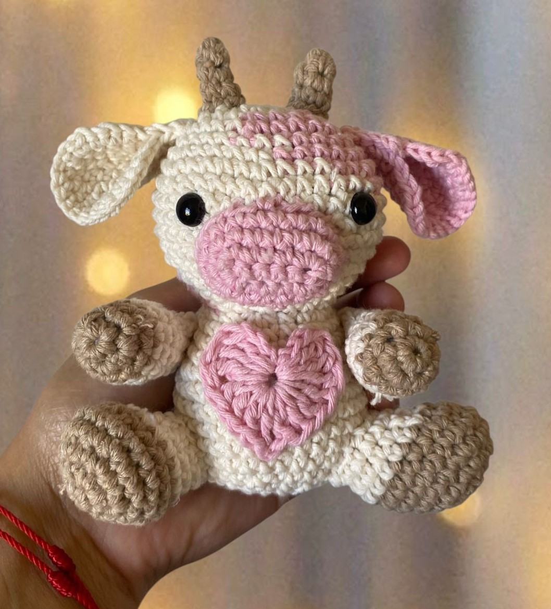

Receita Completa da Vaquinha Amorinha de Amigurumi

Materiais
- Fio cor off white
- Fio cor rosa bebê
- Fio cor marrom
- Agulha 2,5mm
- Agulha tapeçaria
- Olho com trava 8mm
- Tesoura
- Enchimento fibra de poliéster
- Cola silicone
Cabeça
- 1ª carr: AM (Anel Mágico) com 6 pb
- 2ª carr: 6 aum (12 pt)
- 3ª carr: (1 pb, 1 aum) x6 (18 pt)
- 4ª carr: (2 pb, 1 aum) x6 (24 pt)
- 5ª carr: (3 pb, 1 aum) x6 (30 pt)
- 6ª carr: 30 pb (1 carr sem aum)
- 7ª carr: (4 pb, 1 aum) x6 (36 pt)
- 8ª carr: (5 pb, 1 aum) x6 (42 pt)
- 9ª à 13ª carr: 42 pb (5 carr sem aum)
- 14ª carr: (5 pb, 1 dim) x6 (36 pt)
- 15ª carr: 36 pb (1 carr sem aum)
- 16ª carr: (4 pb, 1 dim) x6 (30 pt)
- 17ª carr: (3 pb, 1 dim) x6 (24 pt)
- 18ª carr: (2 pb, 1 dim) x6 (18 pt)
- 19ª carr: 18 pb tecidos em BLO (apenas nas alças de trás)
- Acabamento: Colocar os olhos de segurança entre as carreiras 11 e 12, com 9 pontos de distância entre eles. Finalizar preenchendo a cabeça com a fibra siliconada.
Corpo
- 19ª carr (continuação): (2 pb, 1 aum) tecidos na alça da frente restante (24 pt)
- 20ª carr: 24 pb (1 carr sem aum)
- 21ª carr: (3 pb, 1 aum) x6 (30 pt)
- 22ª carr: 30 pb (1 carr sem aum)
- 23ª carr: (4 pb, 1 aum) x6 (36 pt)
- 24ª à 28ª carr: 36 pb (5 carr sem aum)
- 29ª carr: (4 pb, 1 dim) x6 (30 pt)
- 30ª carr: (3 pb, 1 dim) x6 (24 pt)
- 31ª carr: (2 pb, 1 dim) x6 (18 pt) - Colocar o enchimento firmemente aqui.
- 32ª carr: (1 pb, 1 dim) x6 (12 pt)
- 33ª carr: 6 dim (6 pt)
- 34ª carr: Fechar a peça fazendo o Anel Mágico Invertido.
Orelhas
- 1ª carr: 6 pb dentro do AM (6 pt)
- 2ª carr: 6 aum (12 pt)
- 3ª carr: (1 pb, 1 aum) x6 (18 pt)
- 4ª carr: (2 pb, 1 aum) x6 (24 pt)
- 5ª carr: (7 pb, 1 aum) x3 (27 pt)
- Montagem: Dobre a orelha ao meio para juntar as bordas. Faça 4 pb passando pelos dois lados para fechar e arremate deixando fio.
Patas / Braços (Faça 2x)
- 1ª carr: Com o fio marrom, faça 6 pb dentro do AM (6 pt)
- 2ª carr: 6 aum (12 pt)
- 3ª carr: 12 pb sem aum (12 pt)
- Troca de fio para a cor branca/off-white.
- 5ª e 6ª carr: 12 pb sem aum (12 pt)
- 7ª carr: 11 pb, 1 dim (11 pt)
- 8ª carr: 1 dim, 9 pb (10 pt)
- 9ª carr: 1 dim, 8 pb (9 pt)
- 10ª carr: 1 dim, 7 pb (8 pt)
- Dica: Coloque enchimento leve apenas na ponta da patinha. Feche a abertura unindo os lados com 4 pb.
Pernas (Faça 2x)
- 1ª carr: Com o fio marrom, faça 6 pb dentro do AM (6 pt)
- 2ª carr: 6 aum (12 pt)
- 3ª carr: (1 pb, 1 aum) x6 (18 pt)
- 4ª carr: (5 pb, 1 aum) x3 (21 pt)
- 5ª carr: 21 pb sem aum
- 6ª carr: 7 pb, 3 diminuições feitas juntas, 7 pb (18 pt)
- Troca de fio para a cor branca/off-white.
- 7ª carr: 6 pb, 3 diminuições feitas juntas, 6 pb (15 pt)
- 8ª carr: 4 pb, 3 diminuições feitas juntas, 5 pb (12 pt)
- 9ª carr: 12 pb sem aum (12 pt)
- Colocar pouca fibra siliconada apenas para moldar o casco.
Nariz / Focinho
- 1ª carr: Faça 6 correntes, vire e entre trabalhando na 2ª corrente a partir da agulha.
- 2ª carr: Tecer 5 pb, fazer 1 corrente e virar o trabalho.
- 3ª carr: 1 aum, 3 pb, 1 aum. Siga contornando o outro lado de forma oval: 1 aum, 3 pb, 1 aum.
- 4ª carr: 1 pb, 1 aum, 3 pb, 1 pb, 1 aum (distribuindo o máximo de aumentos nas curvas até obter 18 pt).
- 5ª carr: 18 pb sem aum (18 pt).
- 6ª carr: (2 pb, 1 aum) x6 (24 pt).
- 7ª carr: 24 pb sem aum (24 pt).
Chifres (Faça 2x)
- 1ª carr: Com o fio marrom, tecer 4 pb dentro do AM
- 2ª carr: 4 pb sem aum (4 pt)
- 3ª carr: (1 pb, 1 aum) x2 (6 pt)
- 4ª carr: 6 pb sem aum